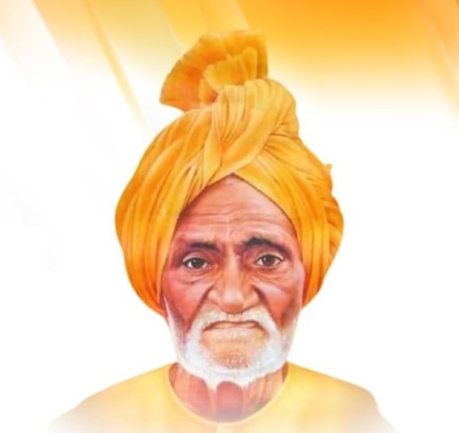

About the award
We recognize people who work in the field of Education, Goseva.
The award was started to honor service, education, and cow protection while keeping the legacy of Swami Brahmanand ji visible and easy to explore.

Award purpose
Promoting Education and Cow Protection
We promote awareness and encourage contributions from the elite society in the fields of education and cow protection. Our mission is to highlight exemplary work and inspire meaningful action in these crucial areas.
Legacy
Tyagmurti Swami Brahmanand
As part of the 125th birth anniversary celebrations of Swami Brahmanand, a visionary known for his remarkable contributions to education and Gauseva, the award was instituted to honor those who continue that tradition.
Swamiji profile
त्यागमूर्ति स्वामी ब्रह्मानन्द
The detailed biography is kept in expandable cards so the original content stays intact while the page remains readable on mobile and desktop.

स्वामी ब्रह्मानन्द का जन्म 04 दिसंबर 1894 ई. को उत्तर प्रदेश के बुंदेलखंड क्षेत्र में जनपद हमीरपुर के ग्राम बरहरा में हुआ था। स्वामी ब्रह्मानन्द के पिता जी मातादीन लोधी थे, जो कि क्षेत्र के समृद्ध किसान परिवार से ताल्लुक रखते थे। इनकी माता का नाम यशोदाबाई था जो धार्मिक प्रवृति की गृहिणी थीं। स्वामी ब्रह्मानन्द के बचपन का नाम शिवदयाल था। स्वामी ब्रह्मानन्द जी की प्राथमिक शिक्षा गांव में ही हुई। तत्कालीन प्रथा के अनुसार शिवदयाल का विवाह ९ वर्ष की अवस्था में ग्राम अमूंद जिला हमीरपुर की राधा बाई के साथ संपन्न हुआ था। शिवदयाल (स्वामी ब्रह्मानन्द) को कसरत, कुश्ती, का बहुत शौक था, जो आजीवन बना रहा । बालक शिव दयाल के मन में बीमार, असहाय तथा गरीबों की सेवा का भाव हमेशा रहा, जिसके कारण उन्होंने गृहस्थ जीवन त्यागने का निर्णय लिया। महज २३ वर्ष की अवस्था में आप ६ मास के इकलौते अबोध पुत्र, व दो वर्षीय पुत्री व युवा धर्म पत्नी तथा भरी पूरी गृहस्थी का परित्याग करके सन्यासी हो गए, स्वतः गेरुआ वस्त्र धारण करके शिव दयाल" स्वामी ब्रह्मानन्द " बन गए । स्वामी ब्रह्मानन्द आध्यात्मिक साधना के लिए हिमालय चले गए। आपके इस गृह त्याग की घटना ने २० वी शताब्दी में राजकुमार सिद्धार्थ की स्मृति को ताज़ा कर दिया । हिमालय के आश्रमों में साधना करते हुए आपने यह अनुभव किया की लोक सेवा ही सच्ची ईश्वर सेवा है। इसी भावना से प्रेरित होकर आप पैदल ही भारत माता के दर्शनों के लिए निकल पड़े। सन्यासी के रूप में १२ वर्षों तक पग पग पूरे देश में घूम घूम कर यात्राएं की, इस दौरान इन्होने देश के जन वासियों की भावनाओ और उनकी समस्याओं को जड़ से समझा और पाया कि कुल समस्याओं की जड़ अशिक्षा है लिहाज़ा इसके लिए उन्होंने खुद को शिक्षा प्रसार हेतु झोक दिया । सन्यास ग्रहण करने के उपरांत आपने कभी मुद्रा को हाथ नहीं लगाया। जहाँँ से जो भी मिला उससे गरीब, बीमार, असहायों की सेवा में व शिक्षा में लगा दिया|
भारत भ्रमण के समय भटिंडा (पंजाब) की एक जनसभा में महात्मा गाँधी के देश भक्ति पूर्ण विचार सुनकर स्वामी ब्रह्मानन्द जी ने आजीवन खादी पहनने का व्रत ले लिया और विदेशी वस्त्रों की होली जलाने का जो कार्यक्रम वहां चल रहा था उसमे भाग लिया उस समय गाँधी जी ने कहा था यदि आप सरीखे १०० सन्यासी मिल जाए तो देश शीघ्र ही आज़ाद हो सकता है। स्वामी जी के कहने पर महात्मा गाँधी सन १९२८ में राठ (हमीरपुर) पधारे तथा बुंदेलखंड के प्रख्यात स्वतंत्रा सेनानी श्रीपत सहाय रावत, दीवान शत्रुघ्न सिंह, पं परमानन्द जी के साथ आंदोलन की रणनीति बनाई गयी ।
04 अप्रैल 1930 में गाँधी जी ने दांडी जाकर नामक कानून भंग किया और संपूर्ण भारत में 13 अप्रैल तक इस कानून को तोड़ने का आह्वान किया। राष्ट्रीय आंदोलन के इस सप्ताह में स्वामी ब्रह्मानन्द ने अपनी अनेक सहयोगियों के साथ यह कानून भंग किया और सभी लोग जेल भेज दिए गए थे। स्वामी जी को दो वर्ष की सजा सुनाई गई। आपको पहले कानपुर जेल भेजा गया जहाँ लगभग एक मास तक आप प्रसिद्ध क्रांतिकारी श्री राधामोहन गोकुल के साथ रहे । इसके पश्चात आप हरदोई जेल भेज दिए गए जहाँ श्री गणेश शंकर विद्यार्थी से आपका घनिष्ठ संपर्क रहा । गाँधी इरविन समझौते के अनुसार सभी लोग 04 मार्च 1931 को कारावास से मुक्त कर दिए गए ।
सन 1932 में सविनय अवज्ञा आंदोलन के दौरान स्वामी जी पुनः कारागार में बंद कर दिए गए । अबकी बार बरेली जेल में रखे गए। यहाँ आपका संपर्क बाबा राघवदास से हुआ । आपके साथ बरेली जेल में पं जवाहरलाल नेहरू भी बंद थे। इस कारागार में कैदियों को कठोर यातनाएं दी जाती थी, उनके विरोध में स्वामी जी ने अन्य नेताओं के साथ मिलकर संघर्ष छेड़ा और अनशन किया। 'भारत छोडो आंदोलन' 1942 में आपकी अति सक्रियता से ब्रितानी सरकार ने आपको पुनः कारावास में डाल दिया ।
सन 1936 में स्वामी जी को समाचार पत्रों से हिसार के भयंकर अकाल की सूचना मिली। आप तुरंत ही वहाँ पीड़ित जनता की सेवा हेतु पहुँचे और वहाँ की दारुण दशा की ओर देश का ध्यान आकर्षित करने के लिए अनशन किया। आपका यह अनशन महात्मा गाँधी, पं जवाहरलाल नेहरू, ठक्कर बाया आदि नेताओं द्वारा पूरा सहयोग दिए जाने का आश्वासन मिलने पर ही समाप्त हुआ। वायसराय ने 6 माह तक राहत फण्ड से पांच लाख रूपए प्रतिमास देना स्वीकार किया । तथा पूरे देश से अन्न, वस्त्र वहाँ पहुँचने लगे । स्वामी ब्रह्मानन्द ने पूरे देश में चाहे दक्षिण भारत हो, मध्य भारत, उत्तर, पश्चिम भारत हो, हर क्षेत्र में प्लेग , हैजा, अकाल पीड़ितों की मदद की।
14 अगस्त 1947 को देश' अंग्रेज़ों' की दासता से मुक्त हुआ परन्तु रजवाड़ो की जनता अभी भी देशी राजाओ की गुलामी की चक्की में पिस रही थी। रियासतों की मुक्ति प्रयास में स्वामी जी ने चरखारी रियासत में जबरदस्त आंदोलन चलाया। इस पर वहा के राजा ने गिरफ्तार करा के जेल में बंद करा दिया। इससे आंदोलन और भड़क उठा। अंततः राजा को झुकना पड़ा और शासन जनता क प्रतिनिधियों को सौपा गया । रियासत कदौरा जालौन के आंदोलन को स्वामी ने सहयोग किया । और हैदराबाद के प्रसिद्ध सत्याग्रह में सम्मिलित होने के लिए आप वहाँ पैदल यात्रा करते हुए पहुंचे थे ।
स्वामी जी की यह प्रबल इच्छा थी कि देश को स्वतंत्र करने के लिए देश भक्त, शिक्षित, समाजसेवी युवक तैयार किये जाये। इस उद्देश्य की पूर्ति के लिए आपने निश्चय किया कि कोई शिक्षा संस्था ग्रामीण क्षेत्र में खोली जाये और वही से स्वतंत्रा संग्राम कि गतिविधियों का सञ्चालन किया जाये। इस योजना के अंतर्गत आपने हमीरपुर जिले के वन्य और पर्वतीय क्षेत्र में स्थित खोही नामक ग्राम (अब महोबा जिला) में एक विद्यालय कि स्थापना की। इस विद्यालय में देश के कई विख्यात क्रांतिकारियों ने अपनी गतिविधियों का केंद्र बनाया था । बुंदेलखंड में अशिक्षा के अंधकार को दूर भगाने के लिए स्वामी जी ने शिक्षा के दीपक जलाने के लिए जिला हमीरपुर के राठ नगर में ब्रह्मानन्द इंटर कॉलेज (1938), ब्रह्मानन्द संस्कृत महाविद्यालय (1943), तथा ब्रह्मानन्द महाविद्यालय (1960) की स्थापना की । जो अपनी कृषि शिक्षा के लिए संपूर्ण देश में ख्याति प्राप्त है। इसके अतिरिक्त शिक्षा प्रसार के लिए अन्य कई विद्यालयों की स्थापना के प्रेरक रहे।
सन 1966 के प्रयाग महाकुम्भ के अवसर पर गौवंश की रक्षा के लिए एक विशाल सभा हुई जिसमें वेश के प्रसिद्ध संतों ने भाग लिया। स्वामी ब्रह्मानन्द ने संतों ने कहा गौ हत्या देश के लिए कलंक है, यदि गौहत्या बंद न हुई तो संतों को चाहिए वेश की तिलांजलि दे दें इस पर दिल्ली में सत्याग्रह करके सरकार पर दबाव डालने का प्रस्ताव पारित किया गया। अगले दिन प्रातःकाल स्वामी जी ने प्रयाग से दिल्ली के लिए पैदल ही प्रस्थान कर दिया साथ में कुछ और भी साधु महात्मा थे । गौ रक्षा आंदोलन के लिए निकला हुआ यह पहला जत्था था जो सन 1966 की राम नवमी को दिल्ली जा पहुंचा। भारत के गृह मंत्री गुलज़ारी लाल नंदा की कोठी के बाहर धरना सत्याग्रह प्रारम्भ हुआ । इस सत्याग्रह को भंग करने के लिए सरकार द्वारा तमाम दबाव डाले गए। अगस्त 1966 में स्वामी जी सहित सभी संतों को गिरफ्तार किया गया। जेल से छूटने के बाद स्वामी जी ने दिल्ली नगर की पैदल परिक्रमा करते हुए जन जागरण किया । 07 सितम्बर को 1966 को स्वामी जी ने 400 संतों के जत्थे के साथ संसद भवन में प्रवेश किया इस पर पुलिस ने जमकर पिटाई की। वहां तैनात एक अधिकारी ने स्वामी जी से कहा अवैध रूप से संसद में घुसना संतों को शोभा नहीं देता । स्वामी ब्रह्मानन्द जी ने उसी समय प्रतिज्ञा कर ली की अब वैधानिक रीति से निर्वाचित होकर ही संसद में प्रवेश करूंगा।
लोक सभा क्षेत्र हमीरपुर (उत्तर प्रदेश) से आप जन संघ पार्टी से 1967 में चुनाव में उतरे, आपके व्यक्तित्व के प्रभाव से कांग्रेस के मजबूत गढ़ से आप स्वयं सांसद चुने गए तथा सभी विधान सभा प्रत्याशी भी जन संघ पार्टी के जीते। स्वामी जी 1967 से 1977 तक लगातार 10 वर्ष सांसद रहे। आपके संसद में दिए गए वक्तव्य आज भी गूंजते है। देश हित के सभी मुद्दों पर आप बड़ी बेबाक टिप्पणियांं करते थे, आपकी इस वाकपटुताव ईमानदारी के कायल पक्ष व विपक्ष सभी रहते थे । तत्कालीन प्रधान मंत्री इंदिरा गाँधी व राष्ट्रपति श्री वी वी गिरी से आपके बहुत घनिष्ठ सम्बन्ध रहे है। आपके आमंत्रण पर दोनों विभूतियाँ राठ हमीरपुर स्थित ब्रह्मानन्द महाविद्यालय में पधारे थे। संसद सदस्यता के वेतन, भत्ते तथा पेंशन के रूप में मिलने वाली धनराशि आप शिक्षा संस्थाओं तथा जरूरत मंदो को सहायता के लिए दान करते रहे । संसद में आप ही एक मात्र सदस्य थे जिनकी कोई निजी संपत्ति नहीं थी। सोवियत नेता श्री ब्रेझनेव सन 1973 में दिल्ली पधारे। उनके समक्ष जब इंदिरा जी ने स्वामी जी का परिचय दिया तब वे भाव विभोर होकर ऐसे लिपट गए थे मानो कि किसी बिछड़े हुए आत्मीय से मिल रहे हों। स्वामी जी समाजवाद कि जीती जागती प्रतिमा थे । दलित, शोषित, एवं पिछड़े वर्गों के उत्थान के लिए आप सदैव प्रयत्नशील रहे। इस मामले में भी आप अपने विचार बहुत ही खरे शब्दों में व्यक्त करते रहे। व्यक्तिगत व्यवहार आपका सदैव मानवतावादी रहा बिना किसी जाति अथवा साम्प्रदयिक भेद भाव के हर दीन दुखी और असहाय व्यक्ति की समस्याओं के समाधान के लिए आपकी कुटिया के द्वार सदैव समान रूप से रहते थे। आपके व्यक्तित्व व कृतित्व से अति प्रभावित होकर उत्तर प्रदेश के मुख्यमंत्री चन्द्र भानु गुप्त ने बुंदेलखंड मालवीय की उपाधि से विभूषित किया था। 13 सितम्बर 1984 को नब्बे वर्ष की आयु में आप इस संसार से विदा हो गए ।
देश के पहले भगवाधारी संत सांसद (1967, लोकसभा हमीरपुर) भारत सरकार ने 14-09-1997 को ब्रह्मानन्द जी के सम्मान में डाक टिकट जारी किया था। स्वामी ब्रह्मानन्द जी द्वारा स्थापित ब्रह्मानन्द वनस्थली को 1989 का इंदिरा प्रियदर्शिनी वृक्षमित्र पुरस्कार तत्कालीन प्रधानमंत्री श्री वी पी सिंह द्वारा महाविद्यालय को प्रदान किया गया । गौ हत्या निषेध आंदोलन 1966 के प्रणेता स्वामी ब्रह्मानन्द । उपाधियाँ / उपनाम - त्यागमूर्ति, संत प्रवर, मानवरत्न, बुंदेलखंड मालवीय ।
ग्रन्थ / पुस्तक का नाम लेखक / प्रकाशक ब्रह्मानन्द तरंगिनि - स्वामी ब्रह्मानन्द संत प्रवर स्वामी ब्रह्मानन्द ब्रह्मानन्द महाविद्यालय, राठ स्मृति विशेषांक स्वामी ब्रह्मानन्द - अभिनन्दन ग्रन्थ ब्रह्मानन्द महाविद्यालय, राठ त्यागमूर्ति स्वामी ब्रह्मानन्द कल्पतरु महाकाव्य बहादुर सिंह निर्दोषी राष्ट्र की ज्योतिर्मय विभूति: स्वामी ब्रह्मानन्द - डॉ जय सिंह सरोज
स्वामी ब्रह्मानन्द समाधि स्थल, राठ, हमीरपुर, उत्तर प्रदेश स्वामी ब्रह्मानन्द जलाशय (बाँध) हमीरपुर, उत्तर प्रदेश स्वामी ब्रह्मानन्द वनस्थली धनौरी, हमीरपुर, उत्तर प्रदेश स्वामी ब्रह्मानन्द मंदिर जन्मस्थली ब्रह्मानन्द धाम बरहरा सरीला स्वामी ब्रह्मानन्द जी की अनाज से निर्मित प्रतिमा - यह प्रतिमा अनाज द्वारा बनायीं गयी दुनिया की इकलौती प्रतिमा है जो राठ शहर के लोधेश्वर धाम में स्थित है